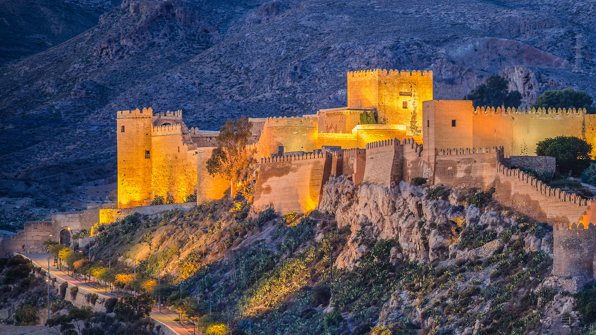
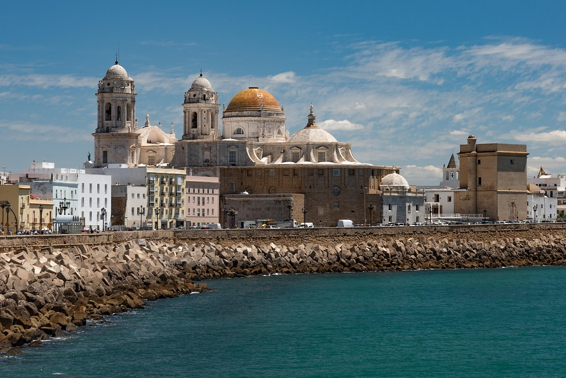
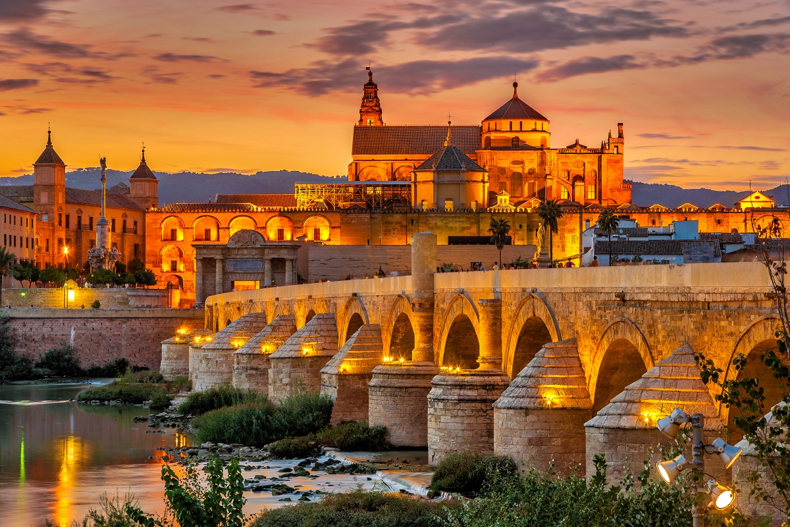
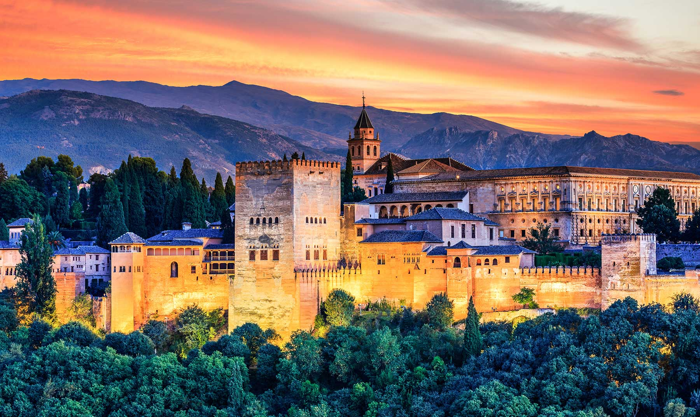
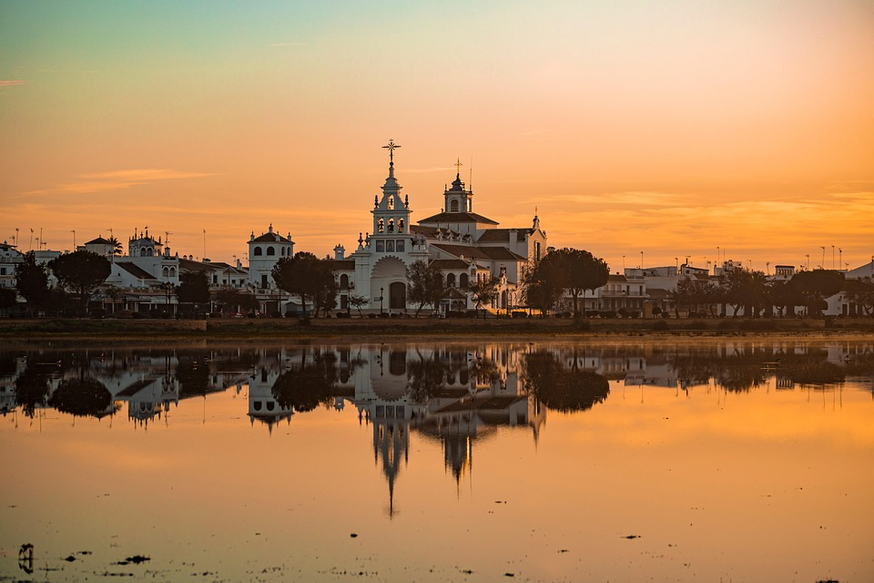
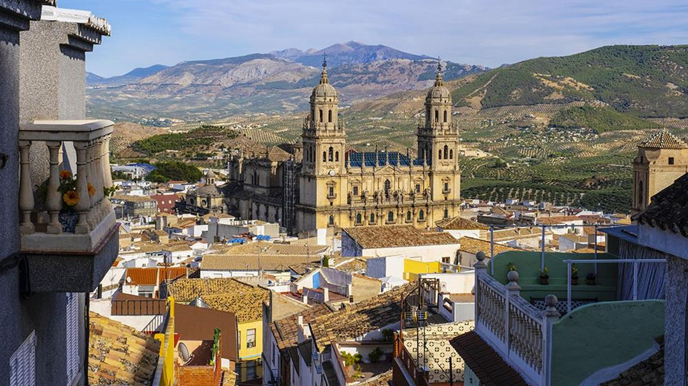
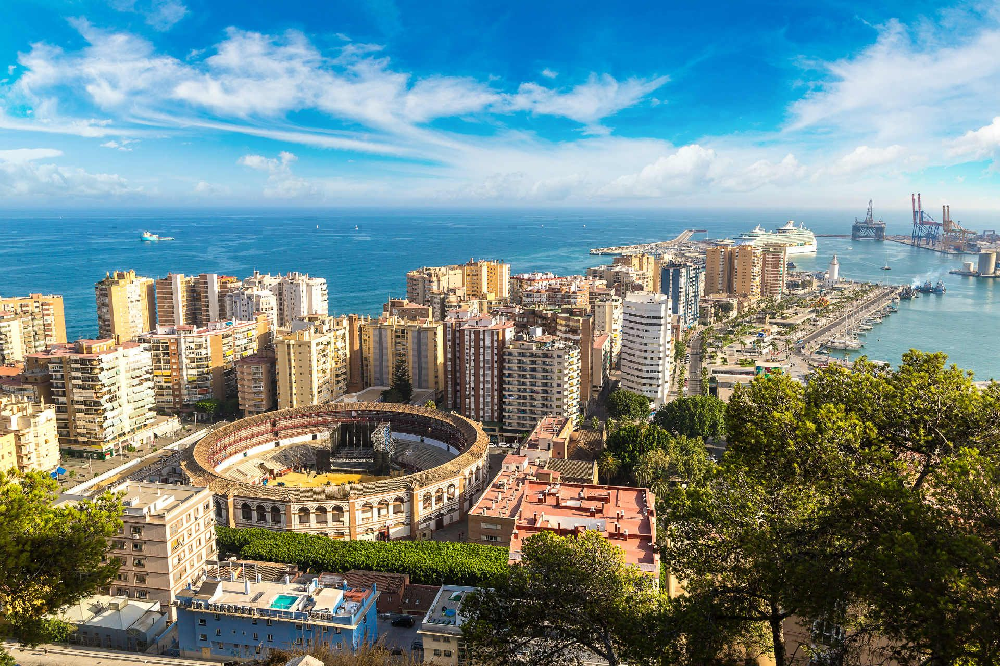
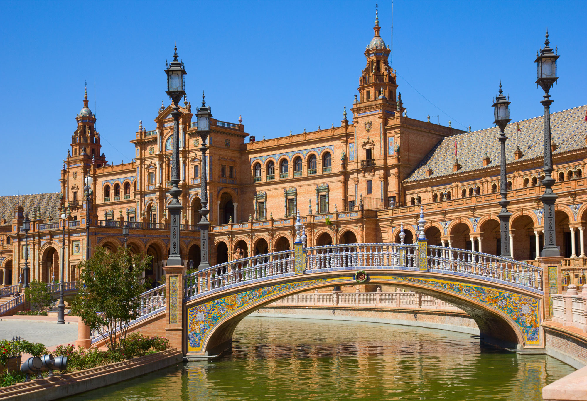

Ubicada en la bahía de su nombre, Almería es una...

La ciudad de Cádiz se asienta en el extremo oriental de la Bahía...

El municipio de Córdoba comprende una zona de sierras al norte...

Tres visiones de Granada a través del tiempo: Al-Suqundi, siglo...

La capital de la provincia está situada en el triángulo de arena que...

Capital de la provincia, Jaén atesora en calles y rincones una gran...

Málaga, llamada la bella, se ubica en el centro de la hoya de su nombre, en el...

Sevilla, capital de Andalucía, ciudad romana, árabe, renacentista...